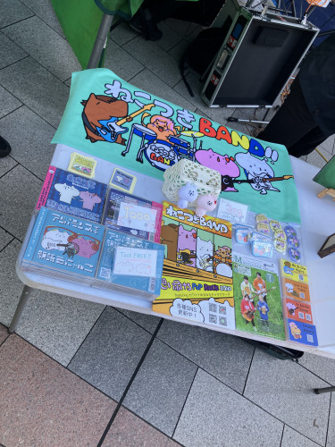

ねこつきの足あと＊＊＊
12/20土曜日は、
クリスマスコンサートに
出演させていただきました＊＊＊
あびこカッパまつりで出会えたしまちゃんのおかげさまで
素敵な清里山荘のライブに出演させていただくことができ
幸せな時間を過ごさせていただくことができました☆
朝からスタッフをしてくれた
3名と共に機材の準備をし
しまちゃんや清里山荘の方々に
お聴きいただきながらリハーサルをして
しまちゃんに向けてお礼のライブをさせていただいたり
本番前もすごく有意義な時間を
過ごさせていただきました🌸✨
一人の方でも喜んで聴いてくださる方がいるのなら
どこにでも行きたいなと改めて本気で思えました😭✨
美味しい昼食もご用意いただき
清里山荘のみなさんにも
とても良くしていただき
みなさんあたたかい方ばかりで
感謝でいっぱいです‼️✨
本番も会場のみなさんも
一緒に盛り上がってくださり
幸せ過ぎる最高な時間でした⭐️✨
共演のみなさんや
司会の方もとても素敵で
本当に楽しかったです🎶😆
共演させていただいた門松さんのブログに
わたしたちも載せていただいてるので
良かったら見てみてください😊
https://ameblo.jp/kadomatsu-miyuki/entry-12949651272.html
お料理も美味しすぎたし
みなさんとワイワイさせていただいた時間も最高に幸せでした＊＊＊
しまちゃん、みなさん、本当にどうもありがとうございました‼️✨
♪(*^^)o∀*∀o(^^*)♪✨
今回のえきにしふりまも
あたたか過ぎる主催者天野さんご夫妻(天野商事)のもと、
素晴らしい音と素晴らしい仲間たちと
素敵な観客の方々と素敵な出店者の方々と
最高の時間を過ごすことができました！！
本当にどうもありがとうございました＊＊＊
PAもしていただいた、hotchpotchのドラマーの
チャボさんの作ってくださった音も最高でした！！
【今回出演してくださったアーティストの皆様】
◉hotchpotch （ハッチポッチ）さん
◉にわか見聞録さんhttps://www.instagram.com/niwakakenbunroku?igsh=bXlmNWV6NG43NDB6
◉Lul(ラル)さんhttps://www.instagram.com/prism_musicacc?igsh=MWtxd3dkbHo0OG5lYQ==
マサさん、今成さん、カポンさん、まさきくん(別ステージ出演)
【お手伝いや参加してくれた方々】
トシさん、まりぃちゃん、なおちゃん一家、遠藤くん、飛び入りで歌ってくださった方々
ねこつきファミリーや、たくさんの方々に観に来ていただき、最高に盛り上がったイベントとなりました☆
本当に幸せな時間をありがとうございました＊＊＊
今後もえきにしふりまは
2ヶ月に一度開催予定です☆
変化していくねこつきBAND主体のイベントを、ぜひ観に来ていただけたら嬉しいです！！
写真と映像はいろんな方にご提供いただきました！！どうもありがとうございます（^人^）
ライブの後の打ち上げ兼忘年会も
30人以上が集まって
みんなでワイワイ楽しかったです☆
料理人のカポンさん
美味しかったお料理たち☆
みんなで仮装大会www
集合写真♪♪(こうじろうを探そう！笑)
あたたかい方々との出会いに感謝！！
幸せな繋がりを末永く大切にできるよう
楽しんで頑張ります☆
みなさん、本当にどうもありがとうございました＊＊＊
みなとみらいワールドポーターズ
でライブをさせていただきました＊＊＊
ベースのこうじろうさんは
流行りのインフルエンザにかかってしまい
残念ながら今回は3人での出演になりました。。。
一緒に楽しんでくださった方々
本当にどうもありがとうございました＊＊＊
足を止めてねこつきBANDの演奏を
じっくり聴いてくださった方々
2階、3階からも手を振ってくださった方々
可愛い子どもたちにもたくさんパワーいただきました🌸
こうじろうさんがいなくてちょっぴり寂しかったですが
賑やかなクリスマスツリーと共演でき
とっても楽しい時間を過ごさせていただきました♪♪
「たまげんきフェスティバル」に
出演させていただきました＊＊＊
ねこつきBANDのステージを一緒に楽しんでくださった方々
共演者の皆さん
スタッフのみなさん
本当にどうもありがとうございました🌸
今回もスタッフも一緒にやらせていただき
あたたかいMラバメンバーと共に
思いっきり楽しめた一日で
共演者のみなさんも
最高のステージ過ぎました‼️‼️
やっぱりたくさんの方々との
お一人お一人とのあたたかな関わり合いで
心が満たされています🍀✨
楽しくて幸せな時間を
いつも本当にどうもありがとうございます🌸
写真は菊ピーさんからいただきました！
菊ピーさんもいつもどうもありがとうございます＊＊＊
物販でもいろんな方々との出会いがあり嬉しかったです☆ 
旅Tさんが作ってくださったいつものこちらも↓
対バンの曲で一緒に踊ってくれた女の子や
チラシをもらっていただき、出番まで残ってくださり、一緒にステージを楽しんでくださった方や
ねこつきBANDの曲に合わせて踊ってくださった方々
本当に楽しかったです♪♪
またみなさんにお会いできる日を楽しみにしてます＊＊＊
たちかわ楽市のBステージに出演させていただきました＊＊＊
一緒に楽しんでくださったみなさん
本当にどうもありがとうございました⭐️
「とある」ファンのみなさんにも楽しんでいただけるよう
頑張って練習した一曲！！
緊張し過ぎてグダグダでしたが
一緒に歌ってくださったり
最後までねこつきBANDの曲も
聴いてくださったり
とても嬉しかったです😊
来年こそ完璧にカバーできるよう
一年かけて仕上げたいです‼️✨
いつも来てくださる方々も
本当にどうもありがとうございます🍀
笑顔が力になり過ぎました‼️‼️
差し入れもありがとうございました＊＊＊
今回は初めてスタッフとしても参加させていただき
いつもわたし達が立たせていただいているステージは
たくさんの人たちの支えがあって
成り立っているものだということを
改めて感じさせていただきました🌸
これからはわたし達ねこつきBANDも
運営側に携わりつつ
もっともっとみなさんに楽しんでいただける演奏をお届けできるように
頑張っていきます！！